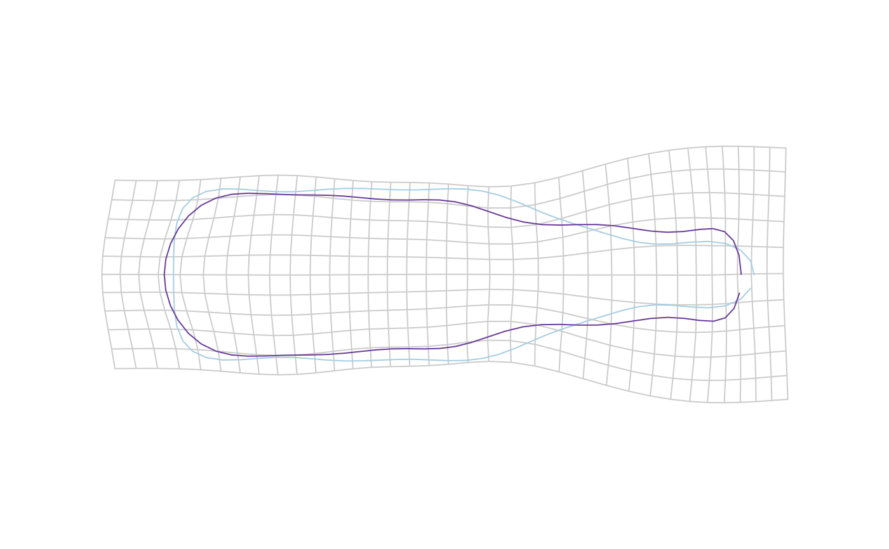

tps_grid calculates and plots deformation grids between two
configurations.
tps_grid( fr, to, amp = 1, over = 1.2, grid.size = 15, grid.col = "grey80", poly = TRUE, shp = TRUE, shp.col = rep(NA, 2), shp.border = col_qual(2), shp.lwd = c(1, 1), shp.lty = c(1, 1), legend = TRUE, legend.text, ... )
| fr | the reference \((x; y)\) coordinates |
|---|---|
| to | the target \((x; y)\) coordinates |
| amp | an amplification factor of differences between |
| over |
|
| grid.size |
|
| grid.col | color for drawing the grid |
| poly | whether to draw polygons (for outlines) or points (for landmarks) |
| shp |
|
| shp.col | Two colors for filling the shapes |
| shp.border | Two colors for drawing the borders |
| shp.lwd | Two |
| shp.lty | Two |
| legend | logical whether to plot a legend |
| legend.text | some text for the legend |
| ... | additional arguments to feed coo_draw |
Nothing
#>#>x <- MSHAPES(botF, 'type', nb.pts=80)$shp fr <- x$beer to <- x$whisky tps_grid(fr, to, amp=3, grid.size=10)